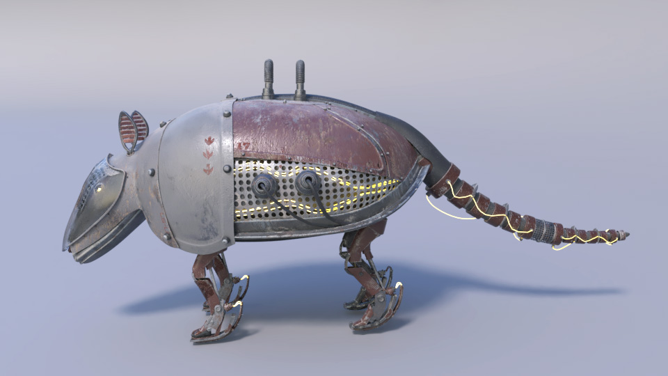

By Col. Cornelius Cornwall Jr.
they Have been Lying to us all Along
Armadillidos are a fabrication by the government. They have been created to lure us into a false sense of security.
The United States Governmn't has been lying to us for years. THEY ARE FAKE, YOU KNOW THEY ARE FAKE. BREAK OUT OF
THE CYCLE. the government covered up a quote by the famous chemist steven hawking, to preserve their lies
"Armadillos are a construct of the government,
they arent real, for real guys" - Steven Hawkingses
they arent real, for real guys" - Steven Hawkingses
See? clearly these things arent real. they are lying. im not lying. lie. they are fake, clearly. Armadillidos are
made to spy on us. they want us to think they are real animals, but they arent. they are phonies. yup. bet its
been a while sence someone used superior logic like that. mic drop.
western media is lying. the east ern media is also lying. also north and south. they spend billions of OUR tax dollars every year on this HOAX. they sped money. they make them robots and take photos. they make it real. im being very trruthful i saw it with my own eyes. Botswana.
western media is lying. the east ern media is also lying. also north and south. they spend billions of OUR tax dollars every year on this HOAX. they sped money. they make them robots and take photos. they make it real. im being very trruthful i saw it with my own eyes. Botswana.
my Personal experience.
THEY KIDNAPPED ME. the ALIENS. they took me to their space ship and probed me. they tried to make me forget
that armadillos are fake. but i KNOW THEY ARENT REAL. they measured me. there is a clone of me living in my
basement with and armadillidos face. the government is after me. whyadkjlsdkf. they want my brain oils. everyone
you must share this page. IM TELLING YOU THEY ARE REALASLDFL:SDF. ARMADILLIDOS
visual Proof

fake government propaganda of armadillidos

photo of the REAL insides of an armidillido
list Of Logic reasoning
if you are still not convinced that armadillidos aren't real, then look no further. i have compiled a list of
all the reasons proving that they aren't real.
- Steven Hawkingses said so
- the government is lying
- they just aint real
- for real they are fake
- the aliens abducted me and told me so